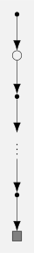

# === a quite greedy Blackjack policy ===
from scripts.environment.black_jack import BlackJack, Action, State
env = BlackJack()
π_at_least_20 = {}
for state in env.state_space:
if state.player_total < 20:
π_at_least_20[state] = Action.HIT
else:
π_at_least_20[state] = Action.STICK5 Monte Carlo Methods
In this chapter ‘Monte Carlo’ means sampling complete episodes. Monte Carlo methods have the following properties:
- use experience
- only applicable for episodic tasks
- updates happen only after an episode
- the MDPs should terminate no matter which actions are taken. This is actually a theoretical assumption, as practically we can’t deal with finite but very long episodes either
5.1 Monte Carlo Prediction
For prediction, we have two variants of Monte Carlo methods:
- every-visit MC: maybe more intuitive but theoretical harder to analyse.
- first-visit MC: seems a bit wasteful at first but returns are independent. It can be beneficial to count a state only once, otherwise huge visit counts to a state in a single episode can have big impacts on the value estimate.
Both variants converge to \(v_\pi(s)\) if every \(s\) is visited infinitely often. The algorithm is stochastic, that’s why we loop forever in the pseudocode to get asymptotic guarantee. In real code, we have to have some stop condition. For example, a simple “high number of iterations and then fingers crossed”.
Input: \(\pi\), the policy to be evaluated
Initialisation: \(V(s)\), for all \(s \in \mathcal{S}\) arbitrarily
\(\mathrm{Returns}(S_t) \gets\) empty list, for all \(s \in \mathcal{S}\)
Loop forever:
Generate an episode following \(\pi\): \(S_0,A_0, R_1, S_1, A_1, \dots, R_T, S_T\)
\(G \gets 0\)
Loop for each step of episode, \(t = T-1, T-2, \dots, 0\):
\(G \gets \gamma G + R_{t+1}\)
If \(S_t\) is not in \(\{S_0,S_1, \dots, S_{t-1}\}\):
Append \(G\) to \(\mathrm{Returns}(S_t)\)
\(V(S_t) \gets \mathrm{average}(\mathrm{Returns}(S_t))\)
Initialisation: \(V(s)\), for all \(s \in \mathcal{S}\) arbitrarily
\(\mathrm{Returns}(S_t) \gets\) empty list, for all \(s \in \mathcal{S}\)
Loop forever:
Generate an episode following \(\pi\): \(S_0,A_0, R_1, S_1, A_1, \dots, R_T, S_T\)
\(G \gets 0\)
Loop for each step of episode, \(t = T-1, T-2, \dots, 0\):
\(G \gets \gamma G + R_{t+1}\)
If \(S_t\) is not in \(\{S_0,S_1, \dots, S_{t-1}\}\):
Append \(G\) to \(\mathrm{Returns}(S_t)\)
\(V(S_t) \gets \mathrm{average}(\mathrm{Returns}(S_t))\)
Example 5.1 This is Example 5.1: Blackjack from Sutton and Barto (2018).
Get your infinite deck ready, we’re heading to the casinos.
Here is a not-so-short summary of the Blackjack variant used in the source. I tried to keep it concise but also precise, the devil lives in the details here.
- player competes against the dealer
- both parties collect cards and if one’s hand value exceeds 21 they automatically lose the game (go bust).
- the deck is “infinite”, i.e., the chances for any card are always like in a freshly shuffled deck.
- the numbered cards go from 1 to 10, the value of face cards is 10 except ace which is valued as 1 or 11 if that doesn’t result in a bust.
- game begins with two cards dealt to the player and dealer each. The player can see the first card of the dealer but not the second.
- right after the hands have been dealt, if the player or the dealer have 21 they have a natural and immediately win, or it’s a draw if both have 21.
- if there are no naturals the player can hit—request a new card—until he sticks—stop and let the dealer collect cards.
- the dealer plays to this fixed strategy, they will hit when they have less than 17, and stick otherwise.
- if neither the player nor the dealer go bust during their turns, the party with the highest total wins, or it’s a draw.
The rule about naturals that I use here seems to be different from what’s stated in Sutton and Barto (2018) which reads as “the dealer’s second card is only checked if the player has a natural”. However, I don’t know which rule they used in their implementation though. This is actually an important point for the distribution of the cards. Following ‘my’ rules, if the game has properly started—no party has a natural—and the dealer’s showing card is an ace, it is guaranteed that the dealer’s second card—the one face down—will not be a 10.
This is how we set up Blackjack as an MDP:
- Each game is an episode with reward: +1 (win), -1 (loss), 0 (draw).
- The state is represented as \[ (\text{player's total}, \text{player has usable ace}, \text{dealer's showing card}), \] where a usable ace means that the hand has one ace that counts as 11 (soft hand).
- W.l.o.g. we can assume that the player’s total is at least 12 as for any value below, there is no chance to go bust and we disregard any incredibly stupid policies that would stick in these kind of situations.
- All that stuff about naturals are not part of the dynamics of the MDP, the game basically ends before it has properly started. They influence the starting states though, as described above.
The strategy we want to evaluate using MC prediction is quite greedy. The agent only sticks on a 20 or 21 otherwise hits. I implemented the Blackjack environment separately and just use it here.
Now let’s set up the code for Listing 6.1. We need to make a few changes:
- Include a stop condition—a simple step counter.
- Calculate the averages for the state-value approximation just once at the end.
- To implement first visit, start with a count of all the states. Then, for each \(S_t\), decrease the counter for that state until it’s one, then we know this is the first visit.
- I added a \(R_0\) which corresponds to naturals (episode starts in a terminal state). However, we ignore these as we only calculate rewards for non-terminal states. This means a fraction of the generated episodes won’t give any experience.
# === MC prediction for Blackjack ===
from collections import Counter, defaultdict
import statistics
import random
from scripts.environment.black_jack import BlackJack, Action, State, Reward
def generate_episode(env, π) -> tuple[list[State], list[Reward], list[Action]]:
states = [] # S_0, ..., S_T
rewards = [] # R_0, ..., R_T
actions = [] # A_0, ..., A_{T-1}
state, reward, terminated = env.reset()
states.append(state)
rewards.append(reward)
while not terminated:
action = π[state]
actions.append(action)
state, reward, terminated = env.step(action)
states.append(state)
rewards.append(reward)
return states, rewards, actions
def mc_prediction(env, π, n_episodes):
returns = defaultdict(list)
for _ in range(n_episodes):
states, rewards, actions = generate_episode(env, π)
G = 0.0
visit_counter = Counter(states)
for i in reversed(range(len(actions))):
G += rewards[i + 1]
state = states[i]
if visit_counter[state] == 1:
returns[state].append(G)
else:
visit_counter[state] += -1
V = {}
for state in env.state_space:
if len(returns[state]) != 0:
V[state] = statistics.mean(returns[state])
return V
iterations = 1 # todo: this should be 5_000_000
value = mc_prediction(env, π_at_least_20, iterations)Here we can see the state-value function as heatmap.
Code
## plotting
import matplotlib.pyplot as plt
import numpy as np
# def plt_grid_for_blackjack
# Prepare axes
player_sums = np.arange(12, 22) # 12–21
dealer_cards = np.arange(2, 12) # 2–11 (11==Ace)
# Helper to build a matrix for usable_ace = True/False
def build_grid(value_dict, usable_ace_flag):
grid = np.zeros((len(player_sums), len(dealer_cards)))
for i, ps in enumerate(player_sums):
for j, dc in enumerate(dealer_cards):
# Create a State object with the current parameters
state = State(
player_total=ps,
is_soft=usable_ace_flag,
dealer_revealed=dc,
)
# Look up the value using the State object
grid[i, j] = value_dict.get(state, np.nan)
return grid
# Create the two grids
grid_no_ace = build_grid(value, False)
grid_with_ace = build_grid(value, True)
# Plot with usable ace
plt.figure()
plt.imshow(
grid_with_ace, origin="lower", aspect="auto", vmin=-1, vmax=1, cmap="coolwarm"
)
for i in range(grid_no_ace.shape[0]):
for j in range(grid_no_ace.shape[1]):
plt.text(
j,
i,
f"{grid_with_ace[i, j]:.2f}",
ha="center",
va="center",
color="black",
fontsize=6,
)
plt.colorbar()
plt.xticks(ticks=np.arange(len(dealer_cards)), labels=dealer_cards)
plt.yticks(ticks=np.arange(len(player_sums)), labels=player_sums)
plt.xlabel("Dealer's Showing Card")
plt.ylabel("Player's Total")
plt.title(f"MC Value Function (With Usable Ace), {iterations:,} Iterations")
plt.tight_layout()
plt.show()
# Plot 1: no usable ace
plt.figure()
plt.imshow(grid_no_ace, origin="lower", aspect="auto", vmin=-1, vmax=1, cmap="coolwarm")
for i in range(grid_no_ace.shape[0]):
for j in range(grid_no_ace.shape[1]):
plt.text(
j,
i,
f"{grid_no_ace[i, j]:.2f}",
ha="center",
va="center",
color="black",
fontsize=6,
)
plt.colorbar()
plt.xticks(ticks=np.arange(len(dealer_cards)), labels=dealer_cards)
plt.yticks(ticks=np.arange(len(player_sums)), labels=player_sums)
plt.xlabel("Dealer's Showing Card")
plt.ylabel("Player's Total")
plt.title(f"MC Value Function (No Usable Ace), {iterations:,} Iterations")
plt.show(){kind=link}
{kind=link}
Exercise 5.1 Consider the diagrams in Figure 5.1. Why does the estimated value function jump up for the last two rows in the top1? Why does it drop off for dealer’s showing card is 11?2 Why are the lowermost values higher in the upper diagrams than in the lower?
Solution 5.1. Let’s answer each question separately:
- the jump at the top: this come from the fact that for 20 or 21 the player sticks and for those values the odds of beating the dealer are quite high. The lower values are all negative meaning, that the player is likely to loose because – I think – with this strategy the agent is quite likely to go bust. The negative values indicate the expected loss for the player, not just that the player is likely to lose.
- this drop off that is not visible in my diagram: in the original diagram the dropoff is between “Dealer’s showing card” is 2 and Ace. But there is no drop off visible in my diagram. I have the theory that their code does not check for dealer naturals which would make a dealer’s showing ace more dangerous.
- All cell values in the upper diagram are higher for player’s total less than 20 as the agent has a better chance to reach 20 or 21 without going bust with an ace up its hand. The rows for player’s total of 20 and 21 should return the same values as the agent chooses to stick in both cases, and the expected outcome is the same.
Exercise 5.2 Suppose every-visit MC was used instead of first-visit MC on the blackjack task. Would you expect the results to be very different? Why or why not?
Solution 5.2. The results would be exactly the same as there is no way to visit a state a second time in blackjack (player’s total goes up or usable ace flag becomes false, and usable ace flag can only become true once).
Example 5.2 This is example 5.2: Soap Bubble from Sutton and Barto (2018).
Take a closed wire frame and dip it into soapy water. We do not want to blow any bubbles; we only want to predict the shape the soap film spans over the frame. If the wire frame is not too wild, we can represent it by prescribing a height function \(h\) on the boundary of some planar region. The plot below shows how this can look.
Code
import numpy as np
import matplotlib.pyplot as plt
from matplotlib import cm
# --- Parameters and calculations ---
# Parameters
radius = 2
offset = 6
n = 35 # resolution (should be 200)
p = 35 # patching (should be 200)
# mesh
x = np.linspace(-radius, radius, n)
y = np.linspace(-radius, radius, n)
x, y = np.meshgrid(x, y)
# disk
mask = np.sqrt(x**2 + y**2) <= radius
# circle
theta = np.linspace(0, 2 * np.pi, n)
x_circle = radius * np.cos(theta)
y_circle = radius * np.sin(theta)
# outline and film height
z_circle = x_circle**2 - y_circle**2
z = np.where(mask, x**2 - y**2, np.nan)
# --- Create figure ---
fig = plt.figure(figsize=(10, 10))
ax = fig.add_subplot(111, projection="3d")
# outline shadow
ax.contourf(
x,
y,
np.where(mask, 0, np.nan),
zdir="z",
alpha=0.3,
)
# wire
ax.plot(
x_circle,
y_circle,
z_circle + offset,
color="black",
linewidth=2.5,
)
# soap film
surf = ax.plot_surface(
x,
y,
z + offset,
cmap="prism",
linewidth=0,
alpha=0.75,
antialiased=True,
shade=False,
rcount=p,
ccount=p,
)
# no tick marks
ax.set_xticklabels([])
ax.set_yticklabels([])
ax.set_zticklabels([])
ax.set_xlabel("")
ax.set_ylabel("")
ax.set_zlabel("")
ax.view_init(elev=20, azim=110)
ax.set_title("A soapy Pringle", pad=20)
plt.show(){kind=link}
The question is: given the height on the boundary, what is the height \(h\) at interior points? Sutton and Barto (2018) set up the problem like this:
Suppose a wire frame forming a closed loop is dipped into soapy water to form a soap surface or bubble conforming to the wire frame at its edges. If the geometry of the wire frame is irregular but known, how can you compute the shape of the surface? The shape has the property that the total force on each point exerted by neighboring points is zero (or else the shape would change). This means that the height at any point is the average of the heights at points in a small circle around that point.
That last sentence as stated is not correct for soap films. It is true for elastic sheets like rubber, for which the restoring force is proportional to local displacement (to first order). In that case, the height function \(h\) satisfies the mean-value property: its value at a point equals asymptotically the average of values on small circles around that point. This is equivalent to \(h\) being a harmonic function: \[ \Delta h = \frac{\partial^2 h}{\partial x^2} + \frac{\partial^2 h}{\partial y^2} = 0. \tag{5.1}\]
Soap films differ. Their molecules do not “stretch out.” What contracts is surface tension, which makes them shrink into minimal surfaces. For more information about the physics behind this, I recommend Oprea (2000). Here, I will state the relevant result: A soap surface given as the graph \(z = h(x, y)\) satisfies the nonlinear minimal-surface equation (Oprea 2000, Proposition 3.2.3) \[ h_{xx}(1 + h_y^2) - 2h_x h_y h_{xy} + h_{yy}(1 + h_x^2) = 0, \tag{5.2}\] where \(h_x, h_{xy}, \dots\) are the partial derivatives \(\frac{\partial h}{\partial x}, \frac{\partial^2 h}{\partial x \partial y}\), etc.
This is generally not equivalent to being harmonic, so the mean-value property does not hold for a soap film in general. However, there is an approximation. When higher powers of the partial derivatives are small, a soap film is well approximated by a harmonic function (Oprea 2000, Exercise 4.4.9). This is why the picture in Figure 5.2 — which simply plots the harmonic function \(x^2 - y^2\) inside a disk — is only an approximation and not an exact minimal surface. Because of this distinction, I replace the “soap film problem” with the “rubber sheet problem” in these notes.
We discretize the equation for harmonic functions so we can solve it numerically. On a rectangular grid, we enforce the discrete mean-value property at interior nodes: for each interior node \((x, y)\), \[ h(x, y) = \frac{1}{4} \sum_{(x', y') \in B(x, y)} h(x', y'), \] where \(B(x, y) = \{(x', y'): |x - x'| + |y - y'| = 1\}\).
Equivalently, \(h\) at an interior site equals the expected boundary value reached by a simple (nearest-neighbor) random walk started at that site. Thus, we can use Monte Carlo methods for solving the rubber sheet problem: run many independent random walks from \((x, y)\) until they first hit the boundary, record the boundary value where each walk exits, and average those values to estimate \(h(x, y)\).
As a concrete example we’ll take this \(7\times7\) grid with radius \(3\):
# === the rubber sheet boundary ===
# -3 -2 -1 0 1 2 3
# -3 3
# -3 3
# -3 x 3
# -3 3
# -3 3
# -3 -2 -1 0 1 2 3
radius = 3
boundary = np.zeros((2 * radius + 1, 2 * radius + 1))
boundary_horizontal = np.arange(-radius, radius + 1)
boundary[0, :] = boundary_horizontal # top edge
boundary[-1, :] = boundary_horizontal # bottom edge
boundary[:, 0] = -radius # left edge
boundary[:, -1] = radius # right edge
center = (3, 3)
boundaryarray([[-3., -2., -1., 0., 1., 2., 3.],
[-3., 0., 0., 0., 0., 0., 3.],
[-3., 0., 0., 0., 0., 0., 3.],
[-3., 0., 0., 0., 0., 0., 3.],
[-3., 0., 0., 0., 0., 0., 3.],
[-3., 0., 0., 0., 0., 0., 3.],
[-3., -2., -1., 0., 1., 2., 3.]])By symmetry the true centre value is \(0\). Let’s see how close a limited Monte-Carlo simulation gets to the true value. First we set up the random-walk sampler that returns the height of the exit cell:
import random
from enum import Enum, auto
class Direction(Enum):
UP = auto()
DOWN = auto()
LEFT = auto()
RIGHT = auto()
MOVE_VECTORS = {
Direction.UP: (-1, 0),
Direction.DOWN: (1, 0),
Direction.LEFT: (0, -1),
Direction.RIGHT: (0, 1),
}
def not_on_boundary(i, j, n_rows, n_cols):
return i > 0 and i < n_rows - 1 and j > 0 and j < n_cols - 1
def single_walk(grid, start_point, rng):
directions = list(Direction)
i, j = start_point
n_rows, n_cols = grid.shape
while not_on_boundary(i, j, n_rows, n_cols):
direction = rng.choice(directions)
di, dj = MOVE_VECTORS[direction]
i += di
j += dj
return grid[i, j]
def monte_carlo_rubber_sheet(grid, point, n_samples, rng):
return [single_walk(grid, point, rng) for _ in range(n_samples)]And now run and average the samples:
rng = np.random.default_rng(0)
n_samples = 1000
samples = monte_carlo_rubber_sheet(boundary, center, n_samples, rng)
print(f"MC estimate after {n_samples} samples: {sum(samples)/n_samples}")MC estimate after 1000 samples: 0.017This is an okay approximation. Note that for Monte Carlo, 1000 runs is not much as it’s inherently slow. One way to assess the quality of the method is by examining the standard error, which is the standard deviation of the estimator itself, i.e., the Monte Carlo simulation considered as a random variable (for a fixed sample size \(n\)). We can see the standard error of this estimator in action if we run the upper experiment a couple of times. It’s quite high, so the estimates fluctuate a lot.
Code
for i in range(5):
samples = monte_carlo_rubber_sheet(boundary, center, n_samples, rng)
print(f"MC estimate after {n_samples} samples: {sum(samples)/n_samples}")MC estimate after 1000 samples: -0.039
MC estimate after 1000 samples: -0.006
MC estimate after 1000 samples: -0.032
MC estimate after 1000 samples: -0.045
MC estimate after 1000 samples: 0.058What I mean by ‘Monte Carlo is slow’ is that the standard error typically scales with \(1/\sqrt{n}\). That is, if we want to cut the standard error in half, we have to run four times more simulations. I go more into detail about this in appendix Section 5.8.1.
There are two final remarks I want to make about Monte Carlo in general:
- A single value without error bounds is usually not really usable. A simple way to get a priori assurances is using confidence intervals. I discuss them quickly in the appendix Section 5.8.2.
- A clever way to decrease the standard error is by importance sampling, which will is also crucial for off-policy learning discussed in Section 5.5.
5.2 Monte Carlo Estimation of Action Values
One way to estimate the action-values is to view each state as its own little armed-bandit where we choose one action and obtain a reward according to the policy. For this we would need exploring starts, the ability to start the episode in any state action pair. This view misses one point though, that by generating an episode starting from one given state-action pair we see the rewards for all state-action pairs that follow.
Exercise 5.3 What is the backup diagram for Monte Carlo estimation of \(q_\pi\)?
Solution 5.3. I’m not 100% sure about this one. I think it’s just the backup diagram for \(v_\pi\) but starting at an action node. The unsure part for me is that \(q_\pi\) depends on an action and a state, so the state must be understood implicitly in the backup diagram. We could also demand that theoretically the actions for each state are distinct.

5.3 Monte Carlo Control
Here is the algorithm for the first-visit Monte Carlo control algorithm with exploring starts
Initialisation:
\(\pi(s) \in \mathcal{A}(s)\), for all \(s \in \mathcal{S}\) arbitrarily
\(Q(s,a) \in \mathbb{R}\), for all \(s \in \mathcal{S}, a \in \mathcal{A}(s)\) arbitrarily
\(\mathrm{Returns}(s,a) \gets \mathrm{empty list}\), for all \(s \in \mathcal{S}, a \in \mathcal{A}(s)\)
Loop forever:
Choose \(S_0 \in \mathcal{S}, A_0 \in \mathcal{A}(S_0)\) randomly such that all pairs have probability \(> 0\)
Generate an episode following \(\pi\): \(S_0,A_0, R_1, S_1, A_1, \dots, R_T, S_T\)
\(G \gets 0\)
Loop for each step of episode, \(t = T-1, T-2, \dots, 0\):
\(G \gets \gamma G + R_{t+1}\)
If \((S_t, A_t) \not\in \{(S_0,A_0), \dots, (S_{t-1},A_{t-1})\}\):
Append \(G\) to \(\mathrm{Returns}(S_t,A_t)\)
\(Q(S_t,A_t) \gets \mathrm{average}(\mathrm{Returns}(S_t,A_t))\)
\(\pi(S_t) \gets \arg \max_a Q(S_t,a)\)
\(\pi(s) \in \mathcal{A}(s)\), for all \(s \in \mathcal{S}\) arbitrarily
\(Q(s,a) \in \mathbb{R}\), for all \(s \in \mathcal{S}, a \in \mathcal{A}(s)\) arbitrarily
\(\mathrm{Returns}(s,a) \gets \mathrm{empty list}\), for all \(s \in \mathcal{S}, a \in \mathcal{A}(s)\)
Loop forever:
Choose \(S_0 \in \mathcal{S}, A_0 \in \mathcal{A}(S_0)\) randomly such that all pairs have probability \(> 0\)
Generate an episode following \(\pi\): \(S_0,A_0, R_1, S_1, A_1, \dots, R_T, S_T\)
\(G \gets 0\)
Loop for each step of episode, \(t = T-1, T-2, \dots, 0\):
\(G \gets \gamma G + R_{t+1}\)
If \((S_t, A_t) \not\in \{(S_0,A_0), \dots, (S_{t-1},A_{t-1})\}\):
Append \(G\) to \(\mathrm{Returns}(S_t,A_t)\)
\(Q(S_t,A_t) \gets \mathrm{average}(\mathrm{Returns}(S_t,A_t))\)
\(\pi(S_t) \gets \arg \max_a Q(S_t,a)\)
It’s actually quite ingenious how this algorithm circumvents the problem that MC prediction Listing 6.1 does not terminate, by letting the approximate \(Q\) be a blend of all returns from all policies the algorithm has passed through so far. On the other hand, in my experience this algorithm tends to live in asymptopia—it can take an unpractical large number of episodes to converge to the optimal policy. In the practical world it can also result in rather flip-floppy behaviour. For example, in Example 5.3 there are actions with low signal-to-noise ratios: their \(q\)-values are close and have high variance. In this case the algorithm will often switch rapidly between these action values. It will eventually, in the limit—whenever that may be—settle on the correct one, but for solving Blackjack I couldn’t get there by sheer brute force. For obtaining good enough policies this is not a real problem—when the \(q\)-values are close, it is largely unimportant which one gets chosen.
The general method also suffers from the usual problems that come with MC methods. When should we stop? How do we know that we have enough episodes? This is a substantial question in its own right, but we’re dealing with the foundations here, so we’ll leave it for now.
Exercise 5.4 The pseudocode for Monte Carlo ES is inefficient because, for each state-action pair, it maintains a list of all returns and repeatedly calculates their mean. It would be more efficient to use techniques similar to those explained in Section 2.4 to maintain just the mean and a count (for each state–action pair) and update them incrementally. Describe how the pseudocode would be altered to achieve this.
Solution 5.4. In the initialsation we don’t need \(\mathrm{Returns}\) any more and use instead
\(\mathrm{Count}(s,a) \gets 0\)
\(\mathrm{Avg}(s,a) \gets 0.0\)
\(\mathrm{Avg}(s,a) \gets 0.0\)
and in the last lines instead of appending \(G\) to \(\mathrm{Returns}\) and calculate the average we do this
\(\mathrm{Count}(S_t,A_t) \gets \mathrm{Count}(S_t,A_t) + 1\)
\(\mathrm{Avg}(S_t,A_t) \gets \mathrm{Avg}(S_t,A_t) + \frac{G - \mathrm{Avg}(S_t,A_t)}{\mathrm{Count}(S_t,A_t)}\)
\(\mathrm{Avg}(S_t,A_t) \gets \mathrm{Avg}(S_t,A_t) + \frac{G - \mathrm{Avg}(S_t,A_t)}{\mathrm{Count}(S_t,A_t)}\)
Example 5.3 This is example 5.3: Solving Blackjack from Sutton and Barto (2018).
Now, we attempt to find the optimal policy for blackjack from Example 5.1. Spoiler alert: we won’t find it here. Using crude Monte Carlo methods would require an unreasonable huge amount of runs to find the optimal strategy. What we can do, however, is find a good strategy and discuss how to verify the optimal strategy from Sutton and Barto (2018).
Let’s dive into the implementation. The code is nearly a verbatim copy of the algorithm given in Listing 5.2, with two changes:
- the code uses the changes from Exercise 5.4 for updating the averages of the \(Q\)-values.
- the code uses every-visit Monte Carlo, unlike the algorithm which is given for first-visit Monte Carlo. However, this doesn’t matter here as Blackjack is acyclic.
import random
from collections import Counter
import scripts.environment.black_jack as black_jack
def generate_episode_es(env, π, start_state, start_action):
"""Generate an episode starting from start_state and start_action following policy π."""
states = [start_state] # S_0, ..., S_T
rewards = [env.set_state(start_state)] # R_0, ..., R_T
actions = [start_action] # A_0, ..., A_{T-1}
# take start action
state, reward, terminated = env.step(start_action)
states.append(state)
rewards.append(reward)
# follow policy
while not terminated:
action = π[state]
actions.append(action)
state, reward, terminated = env.step(action)
states.append(state)
rewards.append(reward)
return states, rewards, actions
def mc_es(env, n_episodes, rng):
"""Monte Carlo control with Exploring Starts.
Returns:
π: The learned policy.
q: The learned action-value function.
"""
env.rng = rng
q = {
(state, action): rng.random()
for state in env.state_space
for action in env.action_space
}
π = {
state: max(env.action_space, key=lambda action: q[(state, action)])
for state in env.state_space
} # this essentially chooses π randomly
c = {(state, action): 0 for state in env.state_space for action in env.action_space}
for _ in range(n_episodes):
# make an episode
start_state = rng.choice(env.state_space)
start_action = rng.choice(env.action_space)
states, rewards, actions = generate_episode_es(
env, π, start_state, start_action
)
# every visit
G = 0
state_actions = [(states[i], actions[i]) for i in range(len(actions))]
for i in reversed(range(len(actions))):
G += rewards[i + 1]
sa = state_actions[i]
# update q
c[sa] += 1
q[sa] += (G - q[sa]) / c[sa]
# update π
state = sa[0]
π[state] = max(env.action_space, key=lambda a: q[(state, a)])
return π, qSo let’s run it!
Code
import random
import matplotlib.pyplot as plt
import numpy as np
iterations = 1_000_000 # should be 1,000,000
rng = random.Random(0)
env = black_jack.BlackJack()
π, q = mc_es(env, iterations, rng)
# --- Plotting ---
# Generate data
player_totals = list(range(21, 11, -1))
dealer_showing = list(range(2, 12))
# Cell text
action_to_string = {black_jack.Action.HIT: "H", black_jack.Action.STICK: "S"}
cell_text_ace, cell_text_no_ace = [], []
for pt in player_totals:
row = [action_to_string[π[black_jack.State(pt, True, dc)]] for dc in dealer_showing]
cell_text_ace.append(row)
row = [
action_to_string[π[black_jack.State(pt, False, dc)]] for dc in dealer_showing
]
cell_text_no_ace.append(row)
# Cell colours
action_to_facecolor = {"S": "#c6dbef", "H": "#fdd0a2"}
cell_colours_ace = [
[action_to_facecolor[element] for element in row] for row in cell_text_ace
]
cell_colours_no_ace = [
[action_to_facecolor[element] for element in row] for row in cell_text_no_ace
]
# Plot
colWidths = [1 / 25] * 10
scale = 1.5
fig, (ax1, ax2) = plt.subplots(2, 1, figsize=(6, 8))
fig.suptitle(f"MC control Blackjack strategy\n(after {iterations:,} iterations)")
# With Ace
ax1.set_axis_off()
tbl1 = ax1.table(
cellText=cell_text_ace,
cellColours=cell_colours_ace,
colWidths=colWidths,
rowLabels=player_totals,
colLabels=dealer_showing,
loc="center",
cellLoc="center",
)
tbl1.scale(scale, scale)
ax1.set_title("Usable Ace")
# Without Ace
ax2.set_axis_off()
tbl2 = ax2.table(
cellText=cell_text_no_ace,
cellColours=cell_colours_no_ace,
colWidths=colWidths,
rowLabels=player_totals,
colLabels=dealer_showing,
loc="center",
cellLoc="center",
)
tbl2.scale(scale, scale)
ax2.set_title("No usable Ace")
plt.tight_layout()
plt.show(){kind=link}
After 1 million episodes, we get a pretty good approximation of the optimal policy shown in Figure 5.2 from Sutton and Barto (2018), but it’s not quite right. Smoothing out the kinks in the policy would require many more runs.
Even if we could run the code for much longer, there remains the question of how to ensure that the resulting policy \(\pi\) is optimal. We could use Monte Carlo prediction to estimate the \(q\)-values and then check if the policy takes only actions with the highest \(q\)-values. However, how can we know if these values are accurate enough? For this, we need a statistical procedure to distinguish the means of action values, even if they are close to each other. Since Monte Carlo prediction can be viewed as a collection of armed bandits, we can use action elimination and stopping conditions for multi-armed bandits to obtain the optimal action. A good reference for the theoretical side can be found in Even-Dar, Mannor, and Mansour (2006).
I’ve done calculating and verifying the optimal solution in a side project, it’s the same given by Sutton and Barto (2018). I won’t go into any more details though, as it’s only tangent to our aim for finding good policies for complicated environments.
5.4 Monte Carlo Control without Exploring Starts
Exploring starts has two problems:
- not always possible
- explores all possible states-action pairs, even though optimal behaviour might only require exploring a small subset of them.
And two ways to get exploration without exploring starts are:
- soft policies
- off-policy prediction
We discuss soft policies now and off-policy prediction in the next section Section 5.5.
A policy is \(\varepsilon\)-soft if \(\pi(a|s) \geq \frac{\varepsilon}{\mathcal{A}(s)}\) for all \(s \in \mathcal{S}\) and \(a \in \mathcal{A}(s)\). The role of the deterministic policies in this class is taken by the \(\epsilon\)-greedy policies, policies that are as deterministic as \(\varepsilon\)-soft policies are allowed. We can think of them as deterministic policies behind a randomizer. With probability \(\varepsilon\) the action gets randomly chosen and with probability \(1-\varepsilon\) the deterministic action is taken. This gives every action a probability of \(\frac{\varepsilon}{|\mathcal{A}(s)|}\) except the greedy action which has a probability of \(1 - \varepsilon + \frac{\varepsilon}{|\mathcal{A}(s)|}\).
Here is the algorithm for approximating an optimal \(\varepsilon\)-soft policy.
Input: small \(\varepsilon > 0\)
Initialisation: \(\pi \gets\) an arbitrary \(\varepsilon\)-soft policy
\(Q(s,a) \in \mathbb{R}\) (arbitrarily), for all \(s \in \mathcal{S}\), \(a \in \mathcal{A}(s)\)
\(\mathrm{Returns}(s,a) \gets\) empty list, for all \(s \in \mathcal{S}\), \(a \in \mathcal{A}(s)\)
Loop forever:
Generate an episode following \(\pi\): \(S_0,A_0, R_1, S_1, A_1, \dots, R_T, S_T\)
\(G \gets 0\)
Loop for each step of episode, \(t = T-1, T-2, \dots, 0\):
\(G \gets \gamma G + R_{t+1}\)
If \((S_t,A_t)\) is not in \(\{(S_0,A_0), \dots, (S_{t-1},A_{t-1})\}\):
Append \(G\) to \(\mathrm{Returns}(S_t)\)
\(Q(S_t, A_t) \gets \mathrm{average}(\mathrm{Returns}(S_t,A_t))\)
\(A^* \gets \arg\max_{a} Q(S_t,a)\)
For all \(a \in \mathcal{A}(S_t)\):
\(\pi(a|S_t) \gets \begin{cases} 1 - \varepsilon + \varepsilon/|\mathcal{A}(S_t)| \\ \varepsilon/|\mathcal{A}(S_t)| \end{cases}\)
Initialisation: \(\pi \gets\) an arbitrary \(\varepsilon\)-soft policy
\(Q(s,a) \in \mathbb{R}\) (arbitrarily), for all \(s \in \mathcal{S}\), \(a \in \mathcal{A}(s)\)
\(\mathrm{Returns}(s,a) \gets\) empty list, for all \(s \in \mathcal{S}\), \(a \in \mathcal{A}(s)\)
Loop forever:
Generate an episode following \(\pi\): \(S_0,A_0, R_1, S_1, A_1, \dots, R_T, S_T\)
\(G \gets 0\)
Loop for each step of episode, \(t = T-1, T-2, \dots, 0\):
\(G \gets \gamma G + R_{t+1}\)
If \((S_t,A_t)\) is not in \(\{(S_0,A_0), \dots, (S_{t-1},A_{t-1})\}\):
Append \(G\) to \(\mathrm{Returns}(S_t)\)
\(Q(S_t, A_t) \gets \mathrm{average}(\mathrm{Returns}(S_t,A_t))\)
\(A^* \gets \arg\max_{a} Q(S_t,a)\)
For all \(a \in \mathcal{A}(S_t)\):
\(\pi(a|S_t) \gets \begin{cases} 1 - \varepsilon + \varepsilon/|\mathcal{A}(S_t)| \\ \varepsilon/|\mathcal{A}(S_t)| \end{cases}\)
We will use this algorithm for Exercise 5.12 and also discuss some properties of optimal \(\varepsilon\)-soft policies.
5.5 Off-policy Prediction via Importance Sampling
Let’s try to motivate importance sampling and also see where the word ‘importance’ comes from through the rubber sheet problem.
5.5.1 🗐 Importance Sampling for the Rubber Sheet Problem
Let’s return to Example 5.2, where we first saw the rubber sheet problem. This time we solve it on the following \(3\times 15\) grid. The goal is to estimate the height at the centre point (marked with an \(x\)) using Monte Carlo (MC) simulation.
# === the long rubber sheet problem ===
# 0 0 0 0 0 0 0 0 0 0 0 0 0 0 0 0 0 0 0
# 1 x 1
# 0 0 0 0 0 0 0 0 0 0 0 0 0 0 0 0 0 0 0
radius_lanky = 7
boundary_height = 1
boundary_lanky = np.zeros((3, 2 * radius_lanky + 1))
boundary_lanky[1, 0] = boundary_height
boundary_lanky[1, 2 * radius_lanky] = boundary_height
center_lanky = (1, radius_lanky)Before running MC, we compute the exact value at the centre so we can judge the estimator’s accuracy. For the analytical derivation, see Section 5.8.3:
Code
# code-fold: true
def g(i):
if i == 0:
return 1
elif i == 1:
return 2
else:
return 4 * g(i - 1) - g(i - 2)
print(f"The exact value at the center is {boundary_height/g(radius_lanky):.6f}")The exact value at the center is 0.000198MC performs poorly on this long, narrow strip. Almost every random walk hits the top or bottom boundary, and only very rarely does one reach the left or right boundary. With \(1000\) simulation, the best sample means we could see are:
- \(0\), if all walks hit the top or bottom;
- \(1/1000=0.001\), if exactly one walk hits the left or right.
The true value is about \(0.0002\). So even in the luckiest case, the estimator’s error is \(0.0002\).
So here is such a typical run:
Code
rng = np.random.default_rng(0)
n_samples = 1000
samples = monte_carlo_rubber_sheet(boundary_lanky, center_lanky, n_samples, rng)
f"MC estimate after {n_samples} samples: {sum(samples)/n_samples}"'MC estimate after 1000 samples: 0.0'Informally, the method is—if you’ll excuse my anthropomorphising—behaving as if it thought: “It’s so unlikely I’ll ever reach the side boundaries that I’ll ignore them and just bounce between the top and bottom.”
But the left and right sides hold important information, while repeatedly sampling the top and bottom gives little new information. We can say that the left and right boundaries are important, and therefore it’s important to sample them more often.
This is the basic idea behind importance sampling: we know that some outcomes (or behaviours) should be sampled more frequently because they contribute more to the expectation we care about. However, if we do sample more frequently from these outcomes, we must correct for this bias in our final calculation.
Let’s formalise this for the rubber sheet problem above and bring it into the language of machine learning. We can see random walks on a grid as episodes of an MDP with a deterministic environment. An random walk is an episode \(\tau = S_0,A_0,\dots,S_{T-1},A_{T-1},S_T\) (we are ignoring rewards for now), where the \(S_i\) are the positions in the grid and the directions \(A_i\) the chosen actions \(U,D,L,R\). \(S_0\) is the center position and \(T\) is the time of first exist and thus \(S_T\) is the first boundary state.
We get equidirectional random walks from the uniform random policy \(\pi\) that assigns equal probability to all directions \(\pi(U) = \pi(D) = \pi(L) = \pi(R) = 0.25\) independent of the position. The probability of a particular trajectory \(\tau\) under \(\pi\) is independent of the \(S_i\) as the environment is deterministic and the policy is also independent of the state \[ \mathrm{Pr}_{\pi}(\tau) = \pi(A_0) \cdot \dots \cdot \pi(A_{T-1}). \]
The expected exit height is therefore \[ \mathbb{E}_{\tau \sim \pi}[h(\tau)] = \sum_{\tau} h(\tau) \cdot \mathrm{Pr}_{\pi}(\tau) \] where \(h(\tau) = h(S_T)\).
Now, instead of the target policy \(\pi\), suppose we sample using a behaviour policy \(b\) which prefers left and right (and is also independent of the states): \[ b(R) = b(L) = 0.45, \quad b(U) = b(D) = 0.05. \]
How can we use episodes sampled according to \(b\) to estimate \(\mathbb{E}_{\tau \sim \pi_t}[h(\tau)]\)? We can use a clever trick here: \[ \begin{split} \mathbb{E}_{\tau \sim \pi}[h(\tau)] &= \sum_{\tau} h(\tau) \mathrm{Pr}_{\pi}(\tau) \\ &= \sum_{\tau} h(\tau) \frac{\mathrm{Pr}_\pi(\tau)}{\mathrm{Pr}_b(\tau)} \cdot \mathrm{Pr}_b(\tau) \\ &= \mathbb{E}_{\tau \sim b}\left[h(\tau) \frac{\mathrm{Pr}_\pi(\tau)}{\mathrm{Pr}_b(\tau)}\right] \end{split} \]
A simple unbiased estimator given \(n\) samples \(\tau_i \sim b\) is \[ \frac{1}{n}\sum h(\tau_i)w(\tau_i) \quad \text{where } w(\tau_i) = \frac{\pi_t(\tau_i)}{\pi_b(\tau_i)} \] where \(w(\tau)\) is called the importance weight.
Now, let’s implement importance sampling. First we define a function that returns \(h(\tau)w(\tau)\) for one episode following \(b\):
# === importance sampling single episode ===
def single_walk_importance_sampling(
grid,
start_point,
b: dict[Direction, float],
rng,
):
"""Sample τ under `b` and return h(τ)·w(τ)
for uniform target π(a)=0.25.
"""
directions = list(b.keys())
probs = list(b.values())
# per-action ratios π(a) / b(a); here π(a) = 0.25
direction_ratio = {directions[i]: 0.25 / probs[i] for i in range(len(b))}
i, j = start_point
n_rows, n_cols = grid.shape
importance_weight = 1
# walk until a boundary cell is reached
while not_on_boundary(i, j, n_rows, n_cols):
# sample an action according to b
direction = rng.choice(directions, p=probs)
# move on grid
di, dj = MOVE_VECTORS[direction]
i += di
j += dj
importance_weight *= direction_ratio[direction]
# on exit, grid[i, j] = h(s_T)
return importance_weight * grid[i, j]Now we can sample some values and take the average to get an estimate:
# === importance sampling for the long rubber sheet ===
n_samples = 1000
rng = np.random.default_rng(0)
b = {
Direction.RIGHT: 0.45,
Direction.LEFT: 0.45,
Direction.UP: 0.05,
Direction.DOWN: 0.05,
}
samples = [
single_walk_importance_sampling(boundary_lanky, center_lanky, b, rng)
for _ in range(n_samples)
]
print(f"importance sampling after {n_samples} iterations:")
print(np.average(samples))importance sampling after 1000 iterations:
0.0001407157859082321We can see that importance sampling MC performs better than ‘crude’ MC—as a simple MC is called in contrast to importance sampling MC. Importance sampling MC has an error of about \(0.00006\) compared to the \(0.0002\) from the crude MC before. And generally, we can expect better results from the importance sampling MC due to its lower variance.
The error of MC techniques depends only on two factors—the standard deviation \(\sigma\) and \(1/\sqrt{n}\) (under the normal approximation that holds for large sample numbers). Importance sampling is a variance reduction technique that gives us an improvement in our estimates without driving up the simulation costs. We can compare the two variances of crude MC and importance sampling for our example:
Code
seed = 0
n_samples = 1 # todo: 100_000
# crude
rng = np.random.default_rng(seed)
samples_crude = monte_carlo_rubber_sheet(boundary_lanky, center_lanky, n_samples, rng)
σ_crude = np.std(samples_crude)
# importance sampling
rng = np.random.default_rng(seed)
samples_is = [
single_walk_importance_sampling(boundary_lanky, center_lanky, b, rng)
for _ in range(n_samples)
]
σ_is = np.std(samples_is)
print(f"Estimates for σ after {n_samples:,} iterations")
print(f"crude Monte Carlo σ: {σ_crude:.5f}")
print(f"importance sampling σ: {σ_is:.5f}")Estimates for σ after 1 iterations
crude Monte Carlo σ: 0.00000
importance sampling σ: 0.00000So we get a roughly \(10\times\) boost in our accuracy, just by sampling more the important directions.
5.5.2 🗐 Importance Sampling in ML
After this little detour of importance sampling in statistics, let’s talk about how it shows up in ML for off-policy prediction. The goal here isn’t variance reduction at all; it’s to let us evaluate a target policy using data generated by a different behaviour policy. In fact, the variance can easily blow up to infinity.
Suppose we have a behaviour policy \(b\), which we use to generate episodes, and a target policy \(\pi\), for which we want the expected return \(v_\pi(s)\). As before, we can pull out the importance sampling trick: \[ \begin{split} v_\pi(s) &= \mathbb{E}_{\tau \sim \pi}[G_0(\tau)| S_0 = s] \\ &= \sum_{\tau} G_0(\tau) \mathrm{Pr}_{\pi}(\tau|S_0 = s) \\ &= \sum_{\tau} G_0(\tau) \frac{\mathrm{Pr}_\pi(\tau |S_0 = s)}{\mathrm{Pr}_b(\tau|S_0 = s)} \mathrm{Pr}_b(\tau|S_0 = s) \\ &= \mathbb{E}_{\tau \sim b}\left[G_0(\tau) \frac{\mathrm{Pr}_\pi(\tau|S_0 = s)}{\mathrm{Pr}_b(\tau|S_0 = s)}\Big| S_0 = s\right] \end{split} \]
We call the ratio inside the expectation the importance weight: \[ w(\tau) = \frac{\mathrm{Pr}_\pi(\tau|S_0 = s)}{\mathrm{Pr}_b(\tau|S_0=s)}. \]
Let’s compute \(w(\tau)\) for an episode \(\tau = S_0, A_0, \dots, A_{T-1}, R_T, S_T\). First note that \[ \mathrm{Pr}_\pi(\tau | S_0 = s) = \prod_{k=0}^{T-1} \pi(A_k|S_k) p(S_{k+1}| S_k, A_k) \] and equally for \(\mathrm{Pr}_\pi(\tau|S_0 = s)\). So the importance weight is \[ \begin{split} w(\tau) &= \frac{\mathrm{Pr}_\pi(\tau|S_0 = s)}{\mathrm{Pr}_b(\tau|S_0 = s)} \\ &= \prod_{k = 0}^{T-1}\frac{\pi(A_k|S_k)}{b(A_k|S_k)} \end{split} \] All the environment dynamics \(p(\cdot)\) cancel out, so the importance weight only depends on the policies which we can compute.
If we collect everything and generalise slightly, we can write: \[ v_\pi(s) = \mathbb{E}_{\tau \sim b}[w_{t:}(\tau)G_t(\tau) | S_t = s] \tag{5.3}\]
with \[ w_{t:}(\tau) = \prod_{k = t}^{T-1}\frac{\pi(A_k|S_k)}{b(A_k|S_k)} \tag{5.4}\]
I’ve drifted away from Sutton and Barto (2018) notation here—and I’ll stick with it for now, because for me their notation is a bit dense. I know… bold move.
Now let’s meet the estimators for Equation 5.3. For episodes \(\tau^{(1)}, \tau^{(2)}, \dots, \tau^{(n)} \sim b\) we define:
- Ordinary importance sampling (OIS): \[
V^{\mathrm{OIS}}(s) = \frac{\sum_{(i,t) \in \mathcal{T}(s)} w_{t:}(\tau^{(i)}) G_t(\tau^{(i)})}{|\mathcal{T}(s)|},
\tag{5.5}\] where \(\mathcal{T}(s)\) is either:
- first-visit: all \((i,t)\) such that \(s\) is first visited at time \(t\) in episode \(i\), or
- every visit: all \((i, t)\) such that \(S^{(i)}_t = s\).
- Weighted importance sampling (WIS): \[ V^{\mathrm{WIS}}(s) = \frac{\sum_{(i,t) \in \mathcal{T}(s)} w_{t:}(\tau^{(i)}) G_t(\tau^{(i)})}{\sum_{(i,t) \in \mathcal{T}(s)} w_{t:}(\tau^{(i)})}. \tag{5.6}\] This also comes in first-visit and every-visit flavours.
5.5.3 🗐 Bias, MSE, and All That
Time to talk properly about estimators. An estimator is just a rule for computing an estimate of some unknown quantity from data. If you want, you can think of an estimator as a random variable built out of other random variables (your data).
In our case, the unknown quantity is \(v_\pi\), the true value function under the target policy \(\pi\); the data are the episodes \(\tau^{(1)}, \dots, \tau^{(n)}\) generated under the behaviour policy \(b\); and the estimators are the various importance sampling constructions: ordinary vs weighted, and first-visit vs every-visit.
First-Visit Ordinary importance Sampling
The first-visit ordinary IS estimator, \(V_\mathrm{fv}^\mathrm{OIS}\), is probably the simplest of the lot. For a given state \(s\), we collect the first \(m\) first-visit samples and treat them as i.i.d. pairs \((w_j,G_j)\) of importance weights and returns. Then: \[ V^{\mathrm{OIS}}_\text{fv}(s) = \frac{1}{m}\sum_{j=1}^m w_j G_j. \]
Because it’s just the mean of independent samples, it’s unbiased: \[ \mathrm{E}[V^{\mathrm{OIS}}_\text{fv}(s)] = v_\pi(s) \] basically by construction, since \[ \mathbb{E}[w_jG_j] = v_\pi(s) \]
A standard way of judging an estimator is the mean squared error (MSE): \[ \mathrm{MSE}(V^{\mathrm{OIS}}_\text{fv}(s)) = \mathbb{E}[(\mathrm{V}^{OIS}_\text{fv}(s) - v_\pi(s))^2]. \]
For an unbiased estimator, the MSE is just the variance, so it scales like \(1/m\) What we usually feel in practice is the root MSE (RMSE): \[ \text{RMSE} = \sqrt{\text{MSE}}, \] which gives the familiar Monte-Carlo rate: \(O(1/\sqrt{m})\).
The catch? Ordinary importance sampling can have infinite variance if the importance weights themselves have infinite variance—which can happen for both first-visit and every-visit versions (see Example 5.5 and the solution to Exercise 5.8). In those cases, you obviously don’t get the \(O(1/\sqrt{m})\) behaviour. Convergence does still happen, but it becomes even slower and generally not usable.
First-Visit Weighted importance Sampling
Now let’s look at the first-visit weighted IS estimator: \[ V_{\text{fv}}^{\mathrm{WIS}} = \frac{\sum_{j=1}^m w_j G_j}{\sum_{j=1} w_j}, \] again for i.i.d. samples \((w_j,G_j)\). This estimator trades a little bias for lower variance, where bias is defined as: \[ B(V_{\text{fv}}^{\mathrm{WIS}}) = \mathbb{E}[V_{\mathrm{fv}}^{\mathrm{WIS}}] - v_\pi(s), \]
To see why the estimator is generally biased, write it as \[ V_{\text{fv}}^{\mathrm{WIS}} = \frac{\left(\sum_{j=1}^m w_j G_j\right)/m}{\left(\sum_{j=1} w_j\right)/m}, \] The numerator is \(V_{\text{fv}}^{\mathrm{OIS}}\), whose expectation is \(v_\pi(s)\); the denominator has expectation 1 (we’ll show this in a moment). But because these two random variables are dependent, we can’t in general take the expectation through the quotient: \[ \mathbb{E}[V_{\text{fv}}^{\mathrm{WIS}}] = \mathbb{E}\left[\frac{V_{\text{fv}}^{\mathrm{OIS}}}{(\sum_j w_j)/m}\right] \not= \frac{\mathbb{E}[V_{\text{fv}}^{\mathrm{OIS}}]}{\mathbb{E}[(\sum_j w_j)/m]} = \frac{v_\pi(s)}{1} \] And here is why \(\mathbb{E}[w]=1\): \[ \begin{split} \mathbb{E}_{\tau \sim b}[w] &= \sum_{\tau} \frac{p_\pi(\tau|S_0=s)}{p_b(\tau)|S_0=s} p_b(\tau|S_0=s) \\ &= \sum_{\tau} p_\pi(\tau|S_0=s) \\ &= 1 \end{split} \]
Despite the bias, it’s really not a disaster: the bias shrinks as \(1/m\) (Agapiou et al. 2017, Theorem 2.1), and the MSE shrinks as \(1/m\) too, just as with OIS. So the bias isn’t doing any real harm.
A crucial advantage is that weighted IS always has finite variance as long as returns are bounded by some \(a\) (maybe even if they are unbounded, I didn’t check that). We can write it as a convex combination: \[ V^\mathrm{WIS}_\text{fv} = \sum_{j=1}^m \alpha_j G_j \quad \text{with } \alpha_j = \frac{w_j}{\sum_{k=1}^m w_k} \]
Since the \(\alpha_j\) just do a weighted sum of the \(∣G_j∣\leq a\), we have \(\mathbb{E}[(V^\mathrm{WIS}_\text{fv})^2] \leq a^2\).
Every-Visit Importance Sampling
The every-visit versions is maybe the easiest to come up conceptually. However, the pairs \((w_j,G_j)\) are not independent when they come from the same episode. This creates correlations that complicate the variance analysis.
The good news is that the every-visit estimators are still consistent: \[ V_\mathrm{ev}^\mathrm{OIS} \to v_π(s), V_\mathrm{ev}^\mathrm{WIS} \to v_\pi(s) \quad \text{for } n \to \infty \]
but they are no longer unbiased for finite data—even for ordinary importance sampling. Practically, the every-visit estimators make fuller use of data: they reuse later parts of each episode instead of discarding everything after the first occurrence of a state. But I don’t know when this is actually useful.
Exercise 5.5 Consider an MDP with a single nonterminal state and a single action that transitions back to the nonterminal state with probability \(p\) and transitions to the terminal state with probability \(1-p\). Let the reward be \(+1\) on all transitions, and let \(\gamma = 1\). Suppose you observe one episode that lasts 10 steps, with a return of 10. What are the first-visit and every-visit estimators of the value of the nonterminal state?
Solution 5.5. The exercise itself is straightforward:
- The first-visit estimate is the first return: 10.
- The every-visit estimate averages all returns after each visit to the state: \[ \frac{10 + 9 + \dots + 1}{10} = \frac{10\cdot 11}{2 \cdot 10} = 5.5 \]
That’s the basic part. Now let’s go a bit further and use this setup to show explicitly that the every-visit estimator \(V_{\text{ev}}(s)\) is biased.
The episode length \(L\) is geometrically distributed: \[ \mathrm{Pr}(L = \ell) = p^{\ell-1}(1-p). \] The return of such an episode is just \(\ell\), so the true value of the nonterminal state is \[ \begin{split} v(s) &= \sum_{\ell = 1}^\infty \ell \cdot p^{\ell -1}(1-p) \\ &= (1-p) \left(\sum_{\ell = 1}^\infty p^\ell \right)' \\ &= (1-p) \left( \frac{1}{1-p} \right)' \\ &= \frac{1}{1-p} \end{split} \]
The every-visit estimator for a single episode of length \(L\) is \[ V_\text{ev} = \frac{1+\dots+L}{L} = \frac{L+1}{2} \] So \[ \mathbb{E}(V_\text{ev}) = \sum_{\ell = 1}^\infty \frac{\ell + 1}{2} p^{\ell-1}(1-p) = \frac{2-p}{2(1-p)}. \] Thus the bias is \[ B(V_\text{ev}) = \mathbb{E}(V_\text{ev}) - v = - \frac{1}{2} \frac{p}{1-p}. \] So we can see that the estimator is biased when sampling a single episode.
Now let’s go above and beyond and compute the bias for the general case of \(m\) episodes. This is mainly to demonstrate how annoying it can be to work with data that aren’t i.i.d.
For \(m\) episodes of lengths \(L_1,\dots,L_m\), the every-visit estimator is \[ \begin{split} V_\text{ev} &= \frac{\sum_{i=1}^m \sum_{t=1}^{L_i} G_{i,t}}{\sum_{i=1}^m L_i} \\ &= \frac{\sum_{i=1}^m \frac{L_i(L_i+1)}{2}}{\sum_{i=1}^m L_i} \\ &= \frac{1}{2} \left( 1 + \frac{\sum_{i=1}^m L_i^2}{\sum_{i=1}^m L_i}\right), \end{split} \]
Let \(S_m=\sum_{i=1}^m L_i\). We now we rely on two non-trivial facts:
- \(\mathbb{E}[L_1^2|S_m = s] = \frac{s(2s-m+1)}{m(m+1)}\)
- \(\mathbb{E}[S_m] = \frac{m}{1-p}\).
Then \[ \begin{split} \mathbb{E}\left[ \frac{\sum_{i=1}^m L_i^2}{\sum_{i=1}^m L_i} \right] &= \sum_{s = m}^\infty \mathbb{E}\left[ \frac{\sum_{i=1}^m L_i^2}{s} | S_m = s \right] \mathrm{Pr}(S_m = s) \\ &= \sum_{s = m}^\infty \frac{m}{s}\mathbb{E}\left[ L_1^2 | S_m = s \right] \mathrm{Pr}(S_m = s) \\ &= m\sum_{s = m}^\infty \frac{1}{s} \frac{s(2s-m+1)}{m(m+1)} \mathrm{Pr}(S_m = s) \\ &= \frac{1}{m+1} \sum_{s=m}^\infty (2s-m+1) \mathrm{Pr}(S_m = s) \\ &= \frac{1}{m+1}\mathbb{E}[2S_m - m + 1] \\ &= \frac{1}{m+1}\left(\frac{2m}{1-p} - m + 1\right). \end{split} \]
Substituting this into the expression for \(\mathbb{E}[V_\text{ev}]\) and simplifying gives: \[ \mathbb{E}[V_\text{ev}] = \frac{m + 1 - p}{(m+1)(1-p)}. \] So the bias is \[ B[V_\text{ev}] = -\frac{1}{m+1}\frac{p}{1-p}. \]
Surprinsingly, this is a very straightforward generalisation of the \(m=1\) case. Also the bias falls as \(1/m\).
Example 5.4 This is example 5.4: Off-policy Estimation of a Blackjack State Value from Sutton and Barto (2018).
Let’s use importance sampling for off-policy prediction for the first time. The goal is to estimate the value \(v_\pi(s)\) of a specific Blackjack state under a target policy \(\pi\), even though our data will be generated by a behaviour policy \(b\). Concretely:
- MDP = blackjack
- \(\pi =\) greedy policy from Example 5.1
- \(b =\) uniform random policy
- \(s =\) (player’s total = 13, usable ace = yes, dealer’s showing = 2)
Sutton and Barto (2018) give the reference value \(v_\pi(s)=−0.27726\). Let’s check it ourselves with crude Monte Carlo just to be sure:
# === crude MC estimate of blackjack state value ===
def generate_episode_from_state(env, π, start_state):
"""Generate an episode starting from start_state following π."""
env.set_state(start_state)
state, terminated = start_state, False
while not terminated:
action = π[state]
state, reward, terminated = env.step(action)
return reward
env = BlackJack()
start_state = State(13, True, 2)
n_samples = 1 # 100_000
trials = [
generate_episode_from_state(env, π_at_least_20, start_state)
for _ in range(n_samples)
]
print(f"v_π(s) ~= {sum(trials) / n_samples} ({n_samples} trials)")v_π(s) ~= 1.0 (1 trials)This lands pretty close to \(-0.27726\), so we believe them and take their number as the reference.
Now let’s set up importance sampling. To do off-policy prediction we need to calculate the importance weight Equation 5.4. Because \(b\) is stochastic and \(\pi\) is deterministic, the importance weight for a trajectory is: \[ w(\tau) = \begin{cases} 0 & \text{if } \exists t \text{ s.t. } A_{t} \neq \pi(S_{t}) \\ \prod_{t=0}^{T-1}\frac{1}{b(A_t)} & \text{otherwise} \end{cases} \]
Here is the implementation of the function bj_importance_weight_compliance that generates an episode and returns the importance weight and the return. The behaviour policy \(b\) is hardcoded as uniformly random and the target policy \(\pi\) is a parameter and expects a deterministic policy. Since \(b\) is stochastic and \(\pi\) is deterministic, the importance weight is \(0\) if \(b\) does something \(\pi\) wouldn’t. This results in a compliance version of importance sampling: as soon as the behaviour policy deviates from the target policy the resulting importance-weight is \(0\). That means in our case—where we have two actions and the behaviour policy is uniformly random—the importance-weight is either \(0\) if \(b\) does something \(\pi\) wouldn’t or \(2^\ell\) where \(\ell\) is the number of compliant actions.
# === single importance-sampling episode for Black Jack ===
EpisodeWG = tuple[float, float] # (weight, return)
def bj_importance_weight_compliance(
env: BlackJack, π: dict[State, Action], start_state: State, rng
) -> EpisodeWG:
"""Generate one episode under the *behaviour* policy b (uniform random)
and return (importance-weight, return)
for target deterministic policy π.
Note:
If the behaviour policy deviates even once (non-compliant),
the correct IS weight is 0 and this returns (0, 0)."""
env.rng = rng
env.set_state(start_state)
episode_length = 0
state, terminated = start_state, False
while not terminated:
episode_length += 1
# behaviour: uniformly random
action = rng.choice(env.action_space)
# if non-compliant, return (0, 0)
if action != π[state]:
1 return 0, 0
# otherwise, continue as usual
state, reward, terminated = env.step(action)
# compliant for the entire episode:
return 2**episode_length, reward- 1
- It’s ok to return \((w,G) = (0,0)\) as soon as \(b\) is non-compliant. We don’t have to know the real \(G\). It only appears in products \(w \cdot G\) so its value doesn’t matter if \(w = 0\).
Just to get a feel for it we can see the returns for 10 episodes
Code
rng = random.Random(0)
start_state = State(13, True, 2)
for i in range(10):
w, r = bj_importance_weight_compliance(env, π_at_least_20, start_state, rng)
print(f"episode {i+1:2d} – Weight {w}, return {r}")episode 1 – Weight 0, return 0
episode 2 – Weight 0, return 0
episode 3 – Weight 0, return 0
episode 4 – Weight 0, return 0
episode 5 – Weight 0, return 0
episode 6 – Weight 8, return -1
episode 7 – Weight 0, return 0
episode 8 – Weight 8, return -1
episode 9 – Weight 0, return 0
episode 10 – Weight 0, return 0So most of the time the weight is 0 and if not it can get quite big. This shows why ordinary importance sampling for off-policy prediction can have such high variance.
Now let’s plot the performance of ordinary and weighted importance sampling.
Code
import random
import seaborn as sns
def mse_vs_m(
env, policy, start_state, max_m: int, iterations_per_m: int, true_value: float, rng
):
"""Estimate MSE of ordinary and weighted importance sampling
as a function of the number of episodes m.
"""
def compute_estimators_from_array(
ep_arr: np.ndarray,
) -> tuple[np.float64, np.float64]:
"""
Given an array of shape (m, 2) where:
col 0 = importance weights (w)
col 1 = returns (G)
compute:
ordinary IS = mean(w * G)
weighted IS = sum(w * G) / sum(w)
"""
w = ep_arr[:, 0]
g = ep_arr[:, 1]
ordinary_IS = np.mean(w * g)
denom = w.sum()
weighted_IS = (w * g).sum() / denom if denom != 0.0 else np.nan
return ordinary_IS, weighted_IS
# --- Prepare arrays to record MSEs for different m values ---
m_values = np.arange(1, max_m + 1)
ordinary_mses = np.empty_like(m_values, dtype=float)
weighted_mses = np.empty_like(m_values, dtype=float)
# --- For each m (sample size), estimate MSE over many independent runs ---
for idx, m in enumerate(m_values):
ord_estimates = np.empty(iterations_per_m, dtype=float)
wgt_estimates = np.empty(iterations_per_m, dtype=float)
for it in range(iterations_per_m):
# --- Collect m independent (weight, return) samples ---
episodes = [
bj_importance_weight_compliance(env, policy, start_state, rng)
for _ in range(m)
]
ep_arr = np.array(episodes, dtype=float) # shape (m, 2)
ord_estimates[it], wgt_estimates[it] = compute_estimators_from_array(ep_arr)
# --- Compute mean squared error relative to the known true value ---
ordinary_mses[idx] = np.nanmean((ord_estimates - true_value) ** 2)
weighted_mses[idx] = np.nanmean((wgt_estimates - true_value) ** 2)
return m_values, ordinary_mses, weighted_mses
def plot_ordinary_vs_weighted_IS(max_episodes, iterations_per_episode, rng):
bj_env = BlackJack()
start_state = State(13, True, 2)
true_value = -0.27726 # precomputed
m_vals, o_mses, w_mses = mse_vs_m(
bj_env,
π_at_least_20,
start_state,
max_episodes,
iterations_per_episode,
true_value,
rng,
)
# --- Plot ---
sns.lineplot(x=m_vals, y=o_mses, label="Ordinary IS MSE", alpha=0.9)
sns.lineplot(x=m_vals, y=w_mses, label="Weighted IS MSE", alpha=0.9)
plt.xscale("log")
plt.yscale("log")
plt.ylim(top=10)
plt.xlabel("Saple size (episodes)")
plt.ylabel(f"Mean squarred error (over {iterations_per_episode} runs)")
plt.title("Ordinary vs Weighted Importance Sampling\non single Blackjack state")
plt.show()
# Example seed that gives nice illustrative curves # 21, 23, 38, 9112
rng = random.Random(0)
max_episodes = 100
iterations_per_episode = 100
# max_episodes = 1
# iterations_per_episode = 1
plot_ordinary_vs_weighted_IS(max_episodes, iterations_per_episode, rng){kind=link}
We can see in Figure 5.4 that the variance of ordinary importance sampling is higher (it produces higher spikes). For samples of size around 100 they seem to produce comparatively similar results.
Example 5.5 Infinite Variance (Sutton and Barto 2018, Example 5.5).
I never thought about what infinite variance means in terms of statistics until this example.
Consider the tiny MDP in Figure 5.5 (a).
The optimal policy is \(\pi(s) = \mathrm{left}\) and \(v_\pi(s) = +1\). Let’s see what importance sampling does with uniform random behaviour policy \(b\).
Weighted importance sampling does a pretty good job here. As soon as it’s defined, i.e., there is one compliant episode in the samples, it estimates exactly \(+1\).
Ordinary importance sampling, does a much worse job.
Code
import numpy as np
import matplotlib.pyplot as plt
import gc
# --- Sampling function ---
_rng = np.random.default_rng()
# This simulates one run on the MDP given above (but much faster)
def sample_powers_of_two(size, rng=_rng):
nonzero_mask = rng.random(size) > 10 / 11
samples = np.zeros(size, dtype=np.int64)
k = nonzero_mask.sum()
if k:
n = rng.geometric(0.55, size=k).astype(np.int64)
samples[nonzero_mask] = 1 << n
return samples
# --- Parameters ---
# N = 100_000_000
N = 10_000_000
num_runs = 3
# --- Generate and plot ---
plt.figure(figsize=(10, 5))
plot_points = 2000
for i in range(num_runs):
samples = sample_powers_of_two(N)
running_avg = np.cumsum(samples) / np.arange(1, N + 1)
raw = np.logspace(0, np.log10(N), num=plot_points)
# indices as 1-based positions, then convert to zero-based for indexing
idxs = np.unique(np.minimum(N, np.maximum(1, np.round(raw).astype(np.int64)))) - 1
xs = idxs + 1
ys = running_avg[idxs]
plt.plot(xs, ys, lw=1.0, alpha=0.7)
del running_avg
del samples
gc.collect()
plt.title(
rf"MC estimate of $v_\pi(s)$ with ordinary importance sampling ({num_runs} runs)"
)
plt.xlabel("Sample size (Episodes)")
plt.xscale("log")
plt.ylabel("V(s)")
plt.ylim(top=2)
plt.grid(True, alpha=0.3)
plt.show()
{kind=link}
The problem for ordinary importance sampling is that the importance-weights have infinite variance. For the variance it’s a battle between very fast growing importance-weights and very fast falling probabilities, which in this case is won by the importance-weights. We look at this in a bit more detail.
A bit of calculating shows that the result of an episode can be described by two independent random variables:
- \(C\): weather the episode is compliant \[ \mathrm{Pr}(C = F) = 11/10, \quad \mathrm{Pr}(C = T) = 1/11 \]
- \(L\): the length of the episode \[ \mathrm{Pr}(L = \ell) = 0.55 \cdot 0.45^{\ell - 1}. \]
So for one episode with reward \(G\) and importance-weight \(w\): \[ \begin{split} \mathbb{E}[(wG)^2] &= \mathbb{E}[(2^L \cdot [C = T])^2] \\ &= \mathbb{E}[C=T] \cdot \mathbb{E}[4^L] \\ &= \frac{1}{11} \sum_{\ell = 1}^\infty 4^\ell \cdot 0.55 \cdot 0.45^{\ell-1} \\ &= \frac{2.2}{11} \sum_{\ell = 1}^\infty 1.8^{\ell-1} \\ &= \infty \end{split} \]
Thus \(\mathrm{var}(wG) = \infty\) and no amount of averaging can make this finite for the sample mean used by ordinary importance sampling. Thus ordinary importance sampling for this problem has infinite variance.
That doesn’t mean we couldn’t use it. The law of large numbers still applies and says that \(V^\mathrm{OIS}_\text{fv}(s) \to v_\pi(s)\) for sample size going to infinity. But we can’t use the central limit theorem and thus the standard error does not decreases with \(1/\sqrt{n}\). However, there are other error metrics that can be used. For example the mean absolute deviation which is finite for \(V^\mathrm{OIS}\). But the problem is that it scales even slower then \(1/\sqrt{n}\), so, it’s eaven less usefull.
Exercise 5.6 What is the equation analogous to Equation 5.6 for action values \(Q(s, a)\) instead of state values \(V(s)\), again given returns generated using \(b\)?
Solution 5.6. Let’s go through all the important steps. Importance sampling trick: \[ \begin{split} q_\pi(s,a) &= \mathbb{E}_{\tau \sim \pi}[G_t(\tau)| S_t = s, A_t = a] \\ &= \sum_{\tau} G_t(\tau) p_\pi(\tau | S_t = s, A_t = a) \\ &= \sum_{\tau} G_t(\tau) \frac{p_\pi(\tau | S_t = s, A_t = a)}{p_b(\tau | S_t = s, A_t = a)}p_b(\tau | S_t = s, A_t = a) \\ &= \mathbb{E}_{\tau\sim b} [w_{t+1}(\tau)G_t(\tau) | S_t = s, A_t = a] \end{split} \]
The last line follows from: \[ \begin{split} \frac{p_\pi(\tau | S_t = s, A_t = a)}{p_b(\tau | S_t = s, A_t = a)} &= \frac{\pi(A_{t+1}|S_{t+1})\dots \pi(A_{T-1}|S_{T-1})}{b(A_{t+1}|S_{t+1})\dots b(A_{T-1}|S_{T-1})} \\ &= w_{t+1}(\tau) \end{split} \]
So we get for ordinary importance sampling \[ Q^{\mathrm{OIS}}(s,a) = \frac{\sum_{(i,t) \in \mathcal{T}(s,a)} w_{t+1}(\tau_i) G_t(\tau_i)}{|\mathcal{T}(s,a)|} \]
and for weighted importance sampling \[ Q^{\mathrm{WIS}}(s,a) = \frac{\sum_{(i,t) \in \mathcal{T}(s,a)} w_{t+1}(\tau_i) G_t(\tau_i)}{\sum_{(i,t) \in \mathcal{T}(s,a)} w_{t+1}(\tau_i)} \]
Exercise 5.7 In learning curves such as those shown in Figure 5.4 error generally decreases with training, as indeed happened for the ordinary importance-sampling method. But for the weighted importance-sampling method error first increased and then decreased. Why do you think this happened?
Solution 5.7. The increasing/decreasing behaviour is not that visible in my plot. It looks it is visible but it’s rather an effect of the variance. When we increase the number of runs we can see that the curve curve goes down but slower than ordinary importance sampling at first:
Code
# Example seed that gives nice illustrative curves # 21, 23, 38, 9112
rng = random.Random(0)
max_episodes = 10
iterations_per_episode = 10000
# max_m = 1
# iterations_per_m = 1
plot_ordinary_vs_weighted_IS(max_episodes, iterations_per_episode, rng)
Nonetheless this is most likely duo to the bias of weighted importance sampling. Note that for an estimator we have \[ \text{MSE} = \text{Var} + \text{Bias}^2 \]
The Bias term goes away pretty quickly but for small samples it still skews the estimator away from the true value.
Exercise 5.8 The results with Example 5.5 and shown in Figure 5.5 used a first-visit MC method. Suppose that instead an every-visit MC method was used on the same problem. Would the variance of the estimator still be infinite? Why or why not?
Solution 5.8. To show that the variance of the every-visit ordinary importance sapmling estimator \(V^\mathrm{OIS}_\text{ev}\) is infinite we will show that \(\mathbb{E}[(V^\mathrm{OIS}_\text{ev})^2]\).
As said in Example 5.5 we can describe a single episode as a random vector \((C,L)\) with \(C\) flaging if the episode is compliant and \(L\) the length of the episode. The sum \(\sum w_tG_t\) for this episode is then \[ \sum w_tG_t = [C = T] \sum 2^t = [C = T] 2^{L+1} - 2 \]
Now we can describe the general case with \(m\) episodes which can be modeled by \(m\) i.i.d. random vectors \((C_1,L_1),\dots,(C_m,L_m)\) and \[ V^\mathrm{OIS}_\text{ev} = \frac{\sum_{i=1}^m [C = T] (2^{L_i+1}-2)}{\sum_{i=1}^m L_i} \]
Now we can provide an estimate \[ \begin{split} \mathbb{E}[(V^\mathrm{OIS}_\text{ev})^2] &\geq \sum_{\ell = 1}^\infty \left(\frac{(2^{\ell+1}-2) + \sum_{i=2}^m (2^{1+1}-2)}{\ell + \sum_{i=1}^m 1}\right)^2 \\ &\quad\cdot \mathrm{Pr}(L_1 = \ell, L_2,\dots,L_m = 1) \\ &\quad\cdot \mathrm{Pr}(C_1, \dots, C_m = 1) \\ &= \sum_{\ell = 1}^\infty \left(\frac{2^{\ell+1}+2(m-2)}{\ell+m-1}\right)^2 \cdot 0.55^m \cdot 0.45^{\ell-1} \cdot (1/11)^m \\ &\approx \sum_{\ell = 1}^\infty 4^\ell 0.45^\ell\\ &= \infty \end{split} \]
So since the second moment is infinite the variance is too.
5.6 Incremental Implementation
We have returns \(G_1,\dots,G_{n-1}\) and random weights \(W_1,\dots,W_{n-1}\). The weighted average is \[ V_n = \frac{\sum_{k=1}^{n-1}W_kG_k}{\sum_{k=1}^{n-1}W_k} \]
Exercise 5.9 Modify the algorithm for first-visit MC policy evaluation (Listing 6.1) to use the incremental implementation for sample averages described in Section 2.4.
Solution 5.9.
Input: \(\pi\), the policy to be evaluated
Initialisation: \(V(s) \gets 0\), for all \(s \in \mathcal{S}\)
\(N(s) \gets 0\), for all \(s \in \mathcal{S}\)
Loop forever:
Generate an episode following \(\pi\): \(S_0,A_0, R_1, S_1, A_1, \dots, R_T, S_T\)
\(G \gets 0\)
Loop for each step of episode, \(t = T-1, T-2, \dots, 0\):
\(G \gets \gamma G + R_{t+1}\)
If \(S_t\) is not in \(\{S_0,S_1, \dots, S_{t-1}\}\):
\(N(S_t) \gets N(S_t) + 1\)
\(V(S_t) \gets V(S_t) + \frac{1}{N(S_t)}[G - V(S_t)]\)
Initialisation: \(V(s) \gets 0\), for all \(s \in \mathcal{S}\)
\(N(s) \gets 0\), for all \(s \in \mathcal{S}\)
Loop forever:
Generate an episode following \(\pi\): \(S_0,A_0, R_1, S_1, A_1, \dots, R_T, S_T\)
\(G \gets 0\)
Loop for each step of episode, \(t = T-1, T-2, \dots, 0\):
\(G \gets \gamma G + R_{t+1}\)
If \(S_t\) is not in \(\{S_0,S_1, \dots, S_{t-1}\}\):
\(N(S_t) \gets N(S_t) + 1\)
\(V(S_t) \gets V(S_t) + \frac{1}{N(S_t)}[G - V(S_t)]\)
Exercise 5.10 Derive the weighted-average update rule (5.8) from (5.7). Follow the pattern of the derivation of the unweighted rule (2.3).
Solution 5.10. TBD
5.7 Off-policy Monte Carlo Control
Exercise 5.11 In the boxed algorithm for off-policy MC control, you may have been expecting the \(W\) update to have involved the importance-sampling ratio \(\frac{\pi(A_t|S_t)}{b(A_t|S_t)}\), but instead it involves \(\frac{1}{b(A_t|S_t)}\). Why is this nevertheless correct?
Solution 5.11. The whole thing about proceeding to the next episode and updating \(W\) is just complinace. If the behavioral policy does something the target policy would not do, the weight is \(0\). In the other case the importance sampling ratio is just \[ \frac{\pi(A_t|S_t)}{b(A_t|S_t)} = \frac{1}{b(A_t|S_t)} \]
Exercise 5.12 Consider driving a race car around a turn like those shown in Figure 5.5. You want to go as fast as possible, but not so fast as to run off the track. In our simplified racetrack, the car is at one of a discrete set of grid positions, the cells in the diagram. The velocity is also discrete, a number of grid cells moved horizontally and vertically per time step. The actions are increments to the velocity components. Each may be changed by \(+1\), \(-1\), or \(0\) in each step, for a total of nine (\(3 \times 3\)) actions. Both velocity components are restricted to be nonnegative and less than \(5\), and they cannot both be zero except at the starting line. Each episode begins in one of the randomly selected start states with both velocity components zero and ends when the car crosses the finish line. The rewards are 1 for each step until the car crosses the finish line. If the car hits the track boundary, it is moved back to a random position on the starting line, both velocity components are reduced to zero, and the episode continues. Before updating the car’s location at each time step, check to see if the projected path of the car intersects the track boundary. If it intersects the finish line, the episode ends; if it intersects anywhere else, the car is considered to have hit the track boundary and is sent back to the starting line. To make the task more challenging, with probability \(0.1\) at each time step the velocity increments are both zero, independently of the intended increments. Apply a Monte Carlo control method to this task to compute the optimal policy from each starting state. Exhibit several trajectories following the optimal policy (but turn the noise off for these trajectories).
Solution 5.12. This is a substantial exercise. Setting up the environment, the training code, debugging everyting. That’s quite a lot of work. Also training on the full-size tracks is too much to do inside these notes. So I use a smaller track for exposition (Figure 5.6) and for the bigger problems I use pretrained models.
On all problem I use on-policy \(\varepsilon\)-soft first-visit sample-average Monte-Carlo control for training. That’s quite a mouthfull but I will discuss each of these modifiers in this solution. At the very end I will also say some thoughts about Monte-Carlo exploring-starts and off-policy Monte-Carlo.
The track environment
I externalised the racetrack environment into scripts.environment.race_track. Its only required argument is the layout represented as an ASCII string. There are some other knobs, among them the size of the maximal velocity components max_velocity or if the velocity components can be negative only_positive_velocity3. How I read the exercise, they want only_positive_velocity=True but I think that’s a bit strange, especially since then some parts of the provided exmaple tracks would be unreachable. So I will use only_posititve_velocity=False in all of the environments. Also prob_steering_failure=0.1 by default, as required in the exercise.
In the next code I define the small example env_tight. This environment only allows has max_velocity=2, this makes optimal episodes taking the left route shorter than taking the right route.
import scripts.environment.race_track as rt
track_tight = """
##FFF
##---
F#---
-#---
-#---
-#---
-#---
-#---
-#---
-S---
"""
env_tight = rt.RaceTrack(
track_tight,
only_positive_velocity=False,
max_velocity=2,
)The figure explains the track a bit more in detail
Code
import scripts.environment.race_track as rt
import random
import math
import numpy as np
import matplotlib.pyplot as plt
from matplotlib.colors import ListedColormap
def plot_episode(env, states, title=None, radius=0.3, figsize=(8,8)):
"""
Annotate every visit (timestep) but jitter repeated visits around the cell.
radius: radial offset (in cell units) for jitter ring; increase if labels collide.
"""
fig, ax = plt.subplots(figsize=figsize)
img = env.grid._track.T
cmap = ListedColormap(["#444444", "#e68a8a", "#f2f2f2", "#8fd18f"])
ax.imshow(img, cmap=cmap, origin="lower", interpolation="nearest")
ax.set_xticks(np.arange(env.grid.width))
ax.set_yticks(np.arange(env.grid.height))
ax.set_xlim(-0.5, env.grid.width - 0.5)
ax.set_ylim(-0.5, env.grid.height - 0.5)
ax.set_aspect("equal")
# Rotate x-tick labels
plt.setp(ax.get_xticklabels(), rotation=45, ha="right")
# grid lines
for x in range(env.grid.width):
for y in range(env.grid.height):
rect = plt.Rectangle(
(x - 0.5, y - 0.5),
1,
1,
fill=False,
edgecolor="#444444",
linewidth=0.1,
)
ax.add_patch(rect)
if len(states) > 0:
positions = [s.position for s in states]
xs = [p[0] for p in positions]
ys = [p[1] for p in positions]
ax.plot(xs, ys, marker="o")
# Build map from position -> list of visit indices
visits = {}
for t, pos in enumerate(positions):
visits.setdefault(pos, []).append(t)
# Annotate each visit with radial offsets to avoid overlap
for pos, idx_list in visits.items():
x0, y0 = pos
n = len(idx_list)
for k, t in enumerate(idx_list):
if n == 1:
dx, dy = (0.08, 0.18)
else:
angle = 2 * math.pi * k / n
dx = math.cos(angle) * radius
dy = math.sin(angle) * radius
ax.text(
x0 + dx,
y0 + dy,
str(t),
fontsize=9,
va="center",
ha="center",
bbox=dict(boxstyle="round,pad=0.1", alpha=0.9),
)
if title:
ax.set_title(title)
return fig, ax
fig, ax = plot_episode(
env_tight,
[],
)
fig.set_size_inches(2.5, 10){kind=link}
env_tight. In the plots the starting cells are red, green squares the finish cells, the squares are the normal track pieces, and the dark squares the walls. The best route is going left and has a length of 5. Going the right path requires one more step.
On-policy first-visit MC control (for ε-soft policies)
We need to implement Listing 5.3. The algorithm lends itself to the following implementation, where the policies are deterministic, but in the episode generation we soften these to \(\varepsilon\)-soft policies, this is basically an implementation of the idea that \(\varepsilon\)-soft policies can be thought of hard policies on the a changed environment that randomices the choosen action with probablity \(\varepsilon\) (Sutton and Barto 2018, chap. 5.4).
This is what generate_episode_soft does, it takes an envirnment, a deterministic policy, an \(\varepsilon\) and produces an episode following \(\pi\) where each step the action gets randomply choosen with probablity \(\varepsilon\). With that the implementation of Listing 5.3 in on_policy_mc_control_soft is actually quite similar to the code used Example 5.3 for MC exploring starts. In a sense on-policy \(\varepsilon\)-soft MC control could be thought of as Monte Carlo with exploring episodes.
from collections import Counter
def generate_episode_soft(
env: rt.RaceTrack,
π: dict[rt.State, rt.Action],
ε: float,
rng: random.Random,
start_pos=None,
max_lenght=None,
):
states = [] # S_0, ..., S_T
rewards = [] # R_0, ..., R_T
actions = [] # A_0, ..., A_{T-1}
if start_pos:
state, reward, terminated = env.set_state(rt.State(start_pos, (0, 0)))
else:
state, reward, terminated = env.reset()
states.append(state)
rewards.append(reward)
ep_length = 0
while not terminated:
if (not max_lenght is None) and ep_length >= max_lenght:
raise RuntimeError("episode seems to be too long")
ep_length += 1
greedy_action = π[state]
# ε-greedy behaviour policy
if rng.random() < ε:
action = rng.choice(env.action_space)
else:
action = greedy_action
actions.append(action)
state, reward, terminated = env.step(action)
states.append(state)
rewards.append(reward)
return states, rewards, actions
def on_policy_mc_control_soft(env: rt.RaceTrack, n_episodes, ε, rng: random.Random):
q = {
(state, action): rng.random()
for state in env.state_space
for action in env.action_space
}
π = {
state: max(env.action_space, key=lambda action: q[(state, action)])
for state in env.state_space
}
c = {(state, action): 0 for state in env.state_space for action in env.action_space}
# record loss for diagnostic
loss = []
for _ in range(n_episodes):
# make an episode
states, rewards, actions = generate_episode_soft(env, π, ε, rng)
# first visit
G = 0
state_actions = [(states[i], actions[i]) for i in range(len(actions))]
visit_counter = Counter(state_actions)
for i in reversed(range(len(actions))):
G += rewards[i + 1]
sa = state_actions[i]
if visit_counter[sa] > 1:
visit_counter[sa] += -1
else:
# update q
c[sa] += 1
q[sa] += (G - q[sa]) / c[sa]
# update π
state = sa[0]
π[state] = max(env.action_space, key=lambda a: q[(state, a)])
loss.append(-G)
return π, q, lossTraining the small example
So let’s train an \(\varepsilon\)-soft agent for env_tight with \(\varepsilon = 0.1\) and plot the loss that occured during the training. The term loss is generally used in gradient descent methods and is the thing which is tried to be minimized. I thought it would be a good fit here. In our case the loss is just the length of the episode. The shorter the episode, the better.
Code
# preparation
rng = random.Random(10)
env_tight.rng = rng
env_tight.prob_steering_failure = 0.1
# training
ε = 0.1
n_episodes = 500
π_tight, q_tight, loss_tight = on_policy_mc_control_soft(
env_tight,
n_episodes,
ε,
rng,
)
# plotting
window = 20
loss_avg = np.convolve(loss_tight, np.ones(window) / window, mode="valid")
plt.plot(
range(1, n_episodes + 1),
loss_tight,
label="Loss (episode length)",
alpha=0.3,
)
plt.plot(
range(1, n_episodes + 1)[window - 1 :],
loss_avg,
label=f"Average over {window} episodes",
)
plt.plot(
range(1, n_episodes + 1),
[4] * n_episodes,
linestyle="--",
label=f"Length optimal episode",
)
plt.yscale("log")
plt.title("Loss during training on `env_tight`")
plt.legend(){kind=link}
Overall, the loss doesn’t go up, and also has some significant drops, which is good. We can also see that in this training run there is only a single episode that reaches the optimal running length of 4 and in the later episodes it regularily gets to 5. Also note that the first couple of episodes had enourmus lengts for the of over 10,000. This is the problem balancing explotaition and exploration again. If I had choosen a higher \(\varepsilon\) then the first couple of episodes would be smaller but the agent had less possibilities to improve as more often it’s actions are out of its control.
These very long intial episodes are also a reason why it’s a bad idea to use every-visit MC for this problem. In every-visit MC these long episodes give lots of unhelpful rewards, I’m pretty sure that some episodes have more every-visits in the first 10 episodes than first-visit in the total run of the training. Also, in this problem good policies usually produce episodes that visit every state once anyways.
Now, let’s see what the trained policy produces without steering failures:
Code
env_tight.prob_steering_failure = 0.0
states, _, _ = generate_episode_soft(
env_tight,
π_tight,
0.0,
rng,
max_lenght=200,
)
plot_episode(env_tight, states){kind=link}
As seen in the loss, the policy prefers taking the right path. Mostl likely, going right is optimal for \(\varepsilon\)-soft policies with \(\varepsilon=0.1\).
This is a demonstration thet soft policies can to avoid optimal behaviour if they require clutch control without error for failure.
The big tracks
Now let’s turn our attention to the original problems (Sutton and Barto 2018, fig. 5.5). The code that we have used so far is too slow for these problems and also for the approach I have chosen learning requires hundreds of millions of episodes on these problems. So I have used a script in scripts/solving_race_track/train_left_track.py and scripts/solving_race_track/train_right_track.py to train policies for a couple of hours. Although, if you want really fast code I wouldn’t use python.
We start with the right track, because surprisingly it’s easier to solve. It’s an interesting observation. The right track has a bigger state space but is easier for our MC method, since the space of relevant states, states that actually matter for a typical run is smaller. This is because optimised episodes for the right track are actually shorter, as the finishing line has a lower y-coordinate, and thus can be reached in fewer steps. Also intiially—where randomness very high—the average episode lengths are shorter.
This code loads the trained policy, the environment and also the loss during training.
Code
import pickle
with open("results/race_track_right.pkl", "rb") as file_in:
result = pickle.load(file_in)
n_episodes_right = result["num_episodes"]
π_right = result["policy"]
ε_max_right = result["epsilon_max"]
ε_min_right = result["epsilon_min"]
env_right = result["env"]
env_right.prob_steering_failure = 0.0
loss_means_right = result["loss_means"]
loss_means_starts_right = result["loss_means_starts"]
loss_means_window_right = result["loss_means_window"]
print(f"The policy was trained for {n_episodes_right:,} episodes.")
print(f"The ε decreased exponentially from {ε_max_right} to {ε_min_right}")The policy was trained for 1,000,000,000 episodes.
The ε decreased exponentially from 0.25 to 0.025In many parts of the training the loss decreases like \(n^{-m}\) for some \(m < 1\). This is a typical behavior for Monte Carlo methods. I have highlighted one part where it scales approximately like \(n^{-1/4}\). I don’t know why the scaling is how it is.
Code
import numpy as np
import matplotlib.pyplot as plt
# Constants
START, END = 750, 1150
# Slice data
x = loss_means_starts_right[START:END]
y = loss_means_right[START:END]
# Log-transform for linear fitting
log_x, log_y = np.log(x), np.log(y)
# Fit linear trend in log-log space
slope, intercept = np.polyfit(log_x, log_y, 1)
decay_rate = np.exp(intercept) * x**slope
decay_rate_str = f"{slope:.2f}"
# Plotting
plt.figure(figsize=(10, 6))
plt.plot(loss_means_starts_right, loss_means_right, label="Loss")
plt.plot(x, decay_rate, label=rf"fit: $n^{{{decay_rate_str}}}$")
# Formatting
plt.xscale("log")
plt.yscale("log")
plt.legend()
plt.title(f"Loss averaged over {loss_means_window_right:,} episodes")
plt.grid(True, which="both", linestyle="--", alpha=0.5)
plt.show(){kind=link}
Now let’s see how the trajectories look like that this policy returns.
Code
states, _, _ = generate_episode_soft(
env_right,
π_right,
0.0,
rng,
max_lenght=200,
start_pos=(0, 0),
)
plot_episode(env_right, states){kind=link}
Code
states, _, _ = generate_episode_soft(
env_right,
π_right,
0.0,
rng,
max_lenght=200,
start_pos=(20, 0),
)
plot_episode(env_right, states)
Code
rng = random.Random(8735)
env_right.rng = rng
states, _, _ = generate_episode_soft(
env_right,
π_right,
0.0,
rng,
max_lenght=200,
start_pos=(1, 0),
)
plot_episode(env_right, states){kind=link}
5.8 🗐 Appendix
5.8.1 Monte Carlo is Slow
The biggest problem is that MC simulation improves very slowly on average. The rate of convergence can be estimate using the central limit theorem that says that the distribution of the sample mean \(\bar{X}_n\) of \(n\) samples \(X_1,\dots,X_n\) approximates a normal distribution center around the true mean \(\mu\): \[ \bar{X}_n \overset{d}{\to} \mathcal{N}(\mu, \frac{\sigma^2}{n}), \]
where \(\sigma^2\) is the true variance of the trials. We don’t know \(\mu\) or \(\sigma\) but we can use this to understand the rate of convergence of MC simulation.
As we are working with quite big \(n\) in MC simulations we’ll just do a leap of faith and work just say use \(\mathcal{N}(\mu, \frac{\sigma^2}{n})\) for the distribution of \(\bar{X}_n\) directly (in general this convergence is of the order \(\frac{1}{\sqrt{n}})\), see the Berry–Esseen theorem, but we will ignore it here). Using the normal approximation this gives us that with a bit more than 95% probability \(\bar{X}_n\) falls within the two sigma interval \([\mu - \frac{2\sigma}{\sqrt{n}}, \mu + \frac{2\sigma}{\sqrt{n}}]\). If we want to cut this interval in half, i.e., make \(\frac{2\sigma}{\sqrt{n}}\) half as big, we have to quadruple the number of trials \(n\), and if we want to get another decimal point in precision we need 100 times more samples. That is really slow.
A saving grace for MC could be that it is very easy to scale in parallel computations but I don’t know how much that helps in real live and here in the real of these notes we are not dealing with any parallelisation.
5.8.2 Confidence intervals
We also should provide some error bars or something for the point estimate. The standard MC approach here is to basically use our estimates for the mean and standard deviations and drop them in \[ \begin{split} \hat{\mu} &= \bar{X}_n = \frac{X_1 + \dots X_n}{n} \\ \hat{\sigma}^2 &= \frac{1}{n-1} \sum_{i=1}^n (X_i - \bar{X}_n)^2 \end{split} \]
and say that \(\mu \in [\hat{\mu} - \frac{2\hat{\sigma}}{\sqrt{n}}, \mu + \frac{2\hat{\sigma}}{\sqrt{n}}]\) with probability 95%. Well… not quite we can only say that before we sampled our data that the true value will be in this interval with probability around 95%. Maybe there is a Bayesian reasoning that actually allows the former formulation, but let’s not get bogged down in to much scientific philosophy here and just follow good practise.
5.8.3 The strip problem
Consider the following discrete harmonic problem. The domain is a \(3\times(2r+1)\) grid (\(3\) rows and \(2r+1\) columns). All boundary cells have value 0 except for the two boundary cells on the middle row—the cells at \((1,0)\) and \((1,2r)\)—which have value 1.
Because the top and bottom rows are entirely boundary, the only non-trivial values lie along the middle row. Let \[ f(i)=\text{value at } (1,i)\quad ,i=0,1,\dots,2r. \]
By the boundary conditions and the four-neighbour averaging rule, the interior values satisfy \[ \begin{split} f(0) &= f(2r) = 1, \text{and} \\ f(i) &= \frac{1}{4}(f(i-1) + f(i+1)) \text{ for } 0 < i < 2r. \end{split} \tag{5.7}\]
The theorem below gives the unique solution. In particular, the value at the centre, \(f(r)\), is given by \(1/g(r)\).
Theorem 5.1 The solution \(f(i)\) for Equation 5.7 is given by \[ f(i) = \frac{g(|i-r|)}{g(r)}, \quad i = 0,1,\dots,2r \tag{5.8}\] where \(g \colon \mathbb{N} \to \mathbb{N}\) is defined by \[ g(n) = \begin{cases} 1 &\text{if }n=0\\ 2 &\text{if }n=1\\ 4g(n-1) - g(n-2) &\text{if }n>1 \end{cases} \]
Proof. Consider first the infinite version of the recurrence \[ f(i) = \frac{1}{4}(f(i-1)+ f(i+1)) \quad i \in \mathbb{Z}. \tag{5.9}\] Place a reference cell at \(i=0\) with value \(1\), and look for a symmetric solution about this cell. Let \(g(n)\) denote the value at distance \(n\) from the centre. Then we have clearly \(g(0) = 1\). Also symmetry and Equation 5.7 force the centre to be the average of its two neighbours, so \(g(1) = 2\) because the center cell is the average of the two adjacent cells. Applying Equation 5.9 at distance \(n>1\) yields the recurrenc \(g(n) = 4g(n-1) - g(n-2)\).
Since Equation 5.9 is linear, any scalar multiple of \(g\) is also a solution. For the finite strip, we rescale by \(g(r)\) so that the values at distance \(r\)—the two boundary cells \((1,0)\) and \((1,2r)\)—are equal to 1. This gives the formula in Equation 5.8.
Agapiou, Sergios, Omiros Papaspiliopoulos, Daniel Sanz-Alonso, and Andrew M. Stuart. 2017. “Importance Sampling: Intrinsic Dimension and Computational Cost.” Statistical Science 32 (3): 405–31. https://doi.org/10.1214/17-STS611.
Even-Dar, Eyal, Shie Mannor, and Yishay Mansour. 2006. “Action Elimination and Stopping Conditions for the Multi-Armed Bandit and Reinforcement Learning Problems.” J. Mach. Learn. Res. 7 (December): 1079–1105.
Oprea, John. 2000. The Mathematics of Soap Films: Explorations with Maple: Explorations with Maple. Fields Institute Communications. American Mathematical Society.
Sutton, Richard S., and Andrew G. Barto. 2018. Reinforcement Learning: An Introduction. Second edition. Adaptive Computation and Machine Learning Series. Cambridge, MA: MIT Press. https://mitpress.mit.edu/9780262039246/reinforcement-learning/.